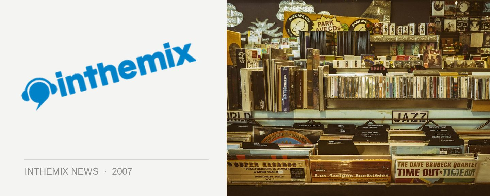

Fuzzy takes control of Sounds on Sunday
Sydney’s biggest dance music promoters Fuzzy have been at the wheel of one the city’s longest running weekly parties for a while now, now comes the news that they’re officially taking over promotional duties for Sounds On Sunday. Big changes ahoy!
Fuzzy have a long heritage in running weekly events, responsible for the seminal Sublime brand in both its Pitt Street and Home incarnations as well as YU for a number of years. Recently they’ve been putting their energy into massive events like Field Day and Parklife but this will see them make a return to focusing on weekly events.
Fuzzy are staying tightlipped at this stage as to what sort of changes they’ll be bringing to the Greenwood, but they’ll be taking the wraps off the “transformation” at a massive launch party on May 27th.
Stay tuned to ITM for details on what changes are in store for Sounds on Sunday…